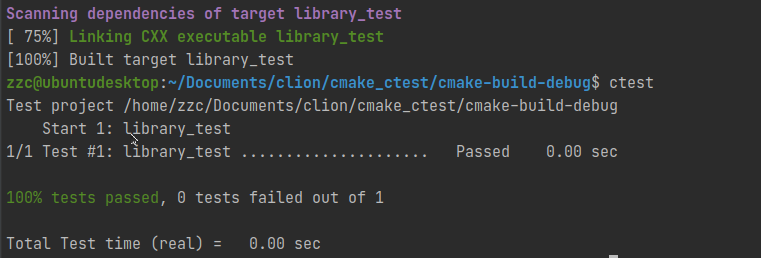

CMake 运行 CTest 进行测试
[toc]
引言
写代码嘛，总归是要写一些测试的，要是把测试代码写在源码里面，会污染源码，很混乱，所以要单独写测试。类似 Java 和 C# 写测试就很方便，到了 C++ 这边总有点难处，还好 CMake 为我们提供了一个简单的工具可以跑测试，就是 CTest，可以很好的和 CMake 脚本结合使用，这里把我学习的一些东西做个笔记吧。
写这个文章的时候我处在无网环境，唯一参考的就是 cmake --help ，奈何本人英文水平不高，所以有些理解会有些许偏差。
使用方式
根目录加 enable_testing()
在根目录的 CMakeLists.txt 文件加上 enable_testing() ，这个 CMake 强调了很多次，不然测试运行不起来。类似这样
option(BUILD_TEST "Whether or not to build the tests" ON)
if (${BUILD_TEST})
message(STATUS "Building tests")
enable_testing() # Enable testing only works in root scope
add_subdirectory(tests)
endif ()
加上测试 add_test
然后这个是我的测试那个 CMakeLists.txt
project(library_test)
add_executable(${PROJECT_NAME} main.cpp)
target_link_libraries(${PROJECT_NAME} library)
add_test(NAME ${PROJECT_NAME}
COMMAND ${PROJECT_NAME})
编译运行
cmake ..
cmake --build .
ctest # 或者make test
看结果

add_test 命令
add_test(NAME <name> COMMAND <command> [<arg>...]
[CONFIGURATIONS <config>...]
[WORKING_DIRECTORY <dir>]
[COMMAND_EXPAND_LISTS])
COMMAND 测试需要运行的命令，如果是 add_executable() 生成的 Target，会自动定位到生成的可执行文件位置
WORKING_DIRECTORY 工作目录，如果没设置且不是 add_executable() 生成的 Target，那么工作目录就默认是 ${CMAKE_CURRENT_BINARY_DIR}
CONFIGURATIONS Restrict execution of the test only to the named configurations.
COMMAND_EXPAND_LISTS Lists in COMMAND arguments will be expanded, including those created with generator expressions.
这两个还没理解，先把原文写在这
默认情况下，给定的 COMMAND 退出代码为 0 代表测试通过，其他代表测试失败。只能这样的话还叫测试？CMake不可能这么 low
设置测试属性
参考 CMake 手册 cmake-properties 的 Properties on Tests 部分，可以看到测试可以设置很多的属性，我这里就挑几个常用的简单记录一下。语法如下：
set_tests_properties(test1 [test2...] PROPERTIES prop1 value1 prop2 value2)
WILL_FAIL
这个大概意思就是非运算，设置这个属性之后，原本测试通过的会测试失败，原本测试失败的会成功通过测试。我就是要反着写，唉，就是玩儿。
TIMEOUT
顾名思义，超时，单位秒。目前我这个版本看到的默认是 10000000，不知道其他版本是不是一样的。到了时间程序还没运行完成的话会直接杀掉并标记测试超时失败，然后运行下一个测试。
TIMEOUT_AFTER_MATCH
也是超时，不过这个是有条件的超时，也就是要当匹配到正则表达式指定的输出后开始计算超时时间，TIMEOUT 是一启动就开始计算超时时间。
注意这个只能使用 set_property(TEST) 来调用，因为他要设置两个参数 set_tests_properties 只支持一个参数；
set_property(TEST mytest PROPERTY TIMEOUT_AFTER_MATCH "${seconds}" "${regex}")
PASS_REGULAR_EXPRESSION
输出至少匹配到一个正则表达式就认为测试通过；正则表达式可以指定多个，用 ; 分隔 。
set_tests_properties(mytest PROPERTIES PASS_REGULAR_EXPRESSION "[a-Z]Pass;[Oo][Kk];Success")
FAIL_REGULAR_EXPRESSION
那这个就和上面那个是反的，匹配到就认为失败；一般情况下，失败比成功容易，所以这个优先级比上面那个高，只有这个匹配到，就注定会失败；正则表达式可以指定多个，用 ; 分隔 。
SKIP_REGULAR_EXPRESSION
经过上面那个，看名字应该也知道干啥的了。输出匹配到正则表达式就会标记为跳过，既然能跳过，那我肯定跳，反复横跳那种跳，所以这个优先级比上两个高；正则表达式可以指定多个，用 ; 分隔 。
SKIP_RETURN_CODE
COMMAND 的返回值为指定的话就会跳过，还是那句话，能跳就跳，所以优先级也比较高。
其他属性
其他还有一大堆属性，我目前用不到，也看不懂，就先不写了。
由于个人水平有限，文中若有不合理或不正确的地方欢迎指出改正